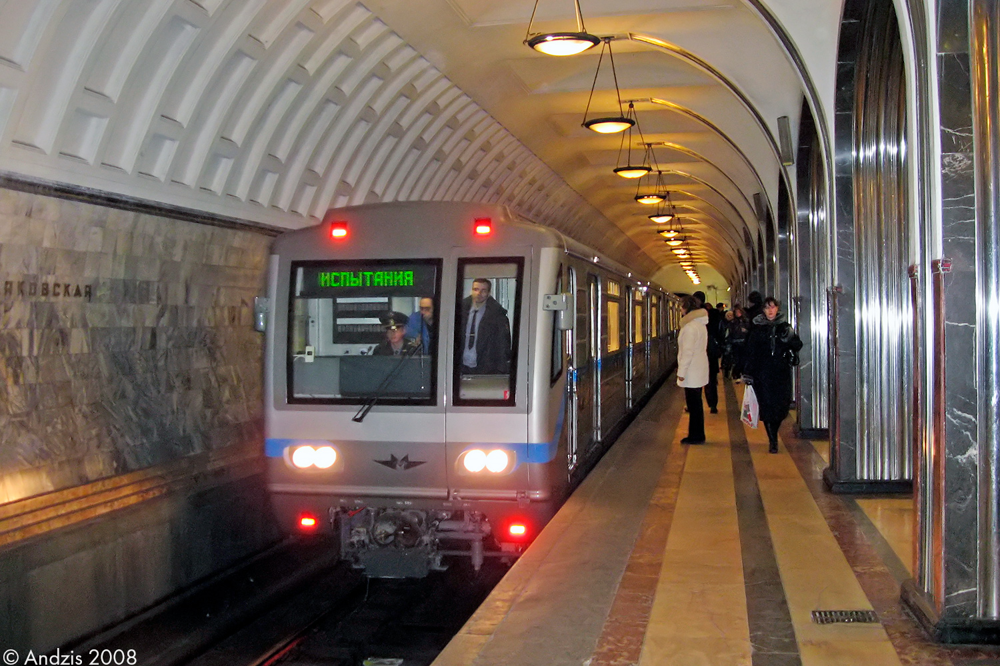

81-717.6К — модернизация с испытаниями
Раньше это был обычный 81-717, его отставили в октябре 2007 года. После капитального ремонта он стал 81-717.6К. Он вышел на испытания в ноябре 2007 года.
Состав поезда
0252-0706- * -0711-0253
Пятивагонный состав с промежуточными вагонами
История поезда
Обычный 81-717
Раньше это был обычный 81-717, эксплуатировавшийся на линиях.
Отставка от работы
Поезд отставили от пассажирской эксплуатации для модернизации.
Капитальный ремонт
После капитального ремонта поезд стал 81-717.6К. Вышел на испытания.
Испытания на ЗЛ
2 года проходил испытания по Замоскворецкой линии, приписан к ТЧ-2 "Сокол".
Калининская линия
Передан на Калининскую линию (ТЧ-12 "Новогиреево"), работал до 2012 года.
Служебный в ТЧ-8
Стал служебным и работал в депо ТЧ-8 "Автозаводское".
Перегон в Митино
Поезд перегнали в депо ТЧ-16 "Митино" для отстоя.
Утилизация
В 2023 году поезд был утилизирован.
Экстерьер (внешний вид)
Окраска
- 09.1991 — 11.2007: бирюзового цвета с белыми полосами по борту
- 11.2007 — 2023: серого цвета с голубыми полосами по борту
Компоновка фар
- 09.1991 — 11.2008: 2-2-2
- С 11.2008: 2-2
Рёбра жёсткости
Три ребра жёсткости на кузове
Сигнальные лампы
Расположение: вертикальное
Интерьер (внутреннее убранство)
Поручни
Вертикальные поручни в салоне
Сиденья
- 09.1991 — 11.2007: диваны, обшитые кожзаменителем
- С 11.2007: антивандальные сиденья синего цвета с поручнями между двумя группами сидений
Пластик
- 09.1991 — 11.2008: жёлтого цвета под дерево
- С 11.2008: пластиковые композитные панели
Освещение
- 09.1991 — 11.2007: лампы типа ЛПВ-01
- С 11.2007: лампы "Электро-Петербург", два ряда
Вентиляция
Принудительная вентиляция в салоне
Эволюция изменений
| Элемент | Период | Описание |
|---|---|---|
| Окраска | 1991-2007 | Бирюзовый с белыми полосами |
| Окраска | 2007-2023 | Серый с голубыми полосами |
| Фары | 1991-2008 | Компоновка 2-2-2 |
| Фары | 2008-2023 | Компоновка 2-2 |
| Сиденья | 1991-2007 | Диваны с кожзаменителем |
| Сиденья | 2007-2023 | Антивандальные синие |
| Пластик | 1991-2008 | Жёлтый "под дерево" |
| Пластик | 2008-2023 | Композитные панели |
| Освещение | 1991-2007 | ЛПВ-01 |
| Освещение | 2007-2023 | "Электро-Петербург", два ряда |
Фотогалерея

📸 andzis
"81-717.6К — уникальный пример глубокой модернизации легендарного вагона. За свою долгую жизнь он сменил несколько окрасок, компоновок фар и даже назначений, прежде чем был утилизирован."